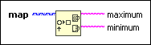
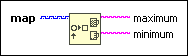

Read Map Max & Min Keys Function
Owning Palette: Map VIs and Functions
Requires: Base Development System
Returns the maximum and minimum keys in a map.

 Add to the block diagram Add to the block diagram |
 Find on the palette Find on the palette |
Owning Palette: Map VIs and Functions
Requires: Base Development System
Returns the maximum and minimum keys in a map.

| Add to the block diagram |
Find on the palette |